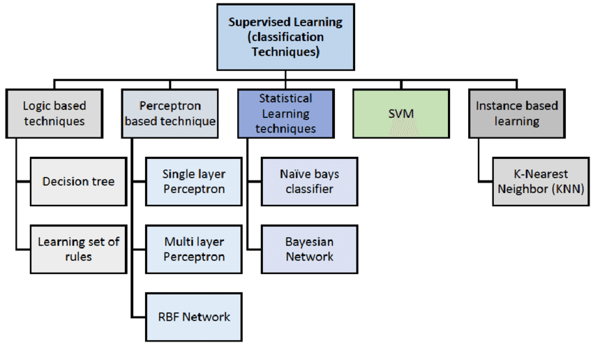
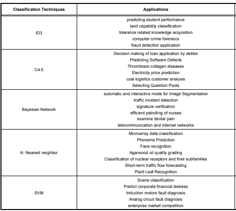
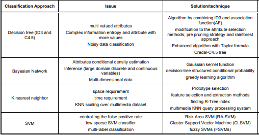

<!DOCTYPE html>
<html lang="en">
<head>
    <meta charset="UTF-8">
    <meta http-equiv="X-UA-Compatible" content="IE=edge">
    <meta name="viewport" content="width=device-width, initial-scale=1.0">
    <title>Classification in machine learning </title>
    <link rel="stylesheet" href="research.css" />
    <script async src="https://pagead2.googlesyndication.com/pagead/js/adsbygoogle.js?client=ca-pub-1420024211484517"
     crossorigin="anonymous"></script>
</head>
<body>
    <h3>Research Paper <br>
        05/04/2022 <br>
        Author : Subash sigdel <br>
        info@subashsigdel.com.np <br>
        www.subashsigdel.com.np</h3>
        <a class="pdf"
        href="researchimg/Classification in Machine Learning.pdf"
        class="btn downloadCV"
        download="classcification in Machine Learning.pdf">
        <span>Download PDF</span></a>
    <h1 id="heading">Classification In Machine Learning</h1>
    <h3 class="topics">1. Abstract</h3>
    <p class="paragraph">Classification is the technique to recognizing a object with it’s pattern or
        classification is the task of learning a target function F that maps each
        attributes set x to one of the predefined class labels y.There are several
        classification techniques that can be used for classification purpose. In this
        paper, we present the basic classification method. This work is about my
        understanding. While doing this research I learned a lot, hopefully others will
        also learn something from here.</p>
    <p class="center"class="paragraph">Keywords: Machine Learning , Clasification , Supervised Learning, 
        Classification Techniques.</p>
    
    <h3 class="topics">2. Introduction</h3>
    <p class="paragraph">Machine Learning (ML) is an application of Artificial intelligence that
        enables a system to learn and improve from expreiences without being
        explicity programmed automatically. Machine Learning is same like human
        learning. When we see something in the street with four legs one curved tail
        and pointed mouth, we say it a dog. Same like humans machine also learns
        from the features and patterns. Four leg curved tail and pointed mouth are
        called features.</p>
    <p class="paragraph">Like we saw some one running with aggressive facial expression we can
            predict that he must be on hurry. Machine Learning does the same . It
            predicts future events on the basis of present and past activities.
            Machine needs algorithms to learn which are man made algorithms.Humans
            have that algorithims inbuilt. Meachine needs a lots of data sets to classify a
            dog. like human have lots of years of experiences to classify a dog as a dog. I
            don’t know how many years it took to human to classify a dog as a dog . </p>
    <p class="paragraph">Machine Learning can mainly classified into board categories includes
        Supervised Meachine Learning, Unsupervised Meachine Learning and
        semi-supervised machine Learning.</p>
    <p class="paragraph">Unsupervised Meachine Learning means the machine is left on it’s own with
        a pile of animal photos and a task to find ot who’s who. Data not labeled,
        There is no teacher machine is trying to find any problems on it’s own.
        </p>
        <p class="paragraph">In Supervised Machine Learning the machine has a “supervisior” or a
            “teacher” who gives the machine all the answer, like wether it’s a cat in the picture or dog. The teacher has already divided (labeled) the data into cats
            and dogs. Supervised Learning further classified into two main categories
            Classification and Regression . Some Regression examples are House price
            prediction, Gold price prediction, weather forecasting e.t.c.It gives output in
            numeric value. While in classification output variables takes class labels</p>
        <p class="paragraph">Classification predicts a discrete target label Y. Classification is the problem
            of assigning new observation to thr class to which they most likely belong
            based on a classification model built from labeled training data. E.g Is this
            mail spam or not. Is this cat or dog etc.</p>
        <p class="paragraph">The accuracy of your classification will depends on the effectivness of
            algorithm you choose, how to apply it, and how much usefull tranning data
            you have. There are various algorithms for classification as shown in the
            figure. We will discuss it later on classification technique[4].
            </p>
            
        <p class="paragraph">Although classification Is well known technique in machine learning but it
            has issues like handling missing data, overfitting, underfitting etc. Data
            problem can be overcome by approacches like, Data miners can over look the
            omitting data.</p>
        <p class="paragraph">Underfitting means high bias and over fitting means high variance. Low bias
            and low variance is just perfect while training model.The other thing we used
            in machine learning to minimize loss is Gradient descent.Gradient descent
            will come over and over again especially in neural networks. Machine
            learning libaries like Scikit-learn Tensorflow use it in the background. The
            goal of gradient descent is to find the minimum of our model’s loss function
            by iteratively getting a better and better approximation of it.
            </p>
        <p class="paragraph">In this work we will focus only on some selected classification methods.This
            paper organized as following: In section 2 methodology of review is
            presented. Section 3 is divided into five subsection in which selected
            classification techniques has been discused and in last there are some tables
            of application issue and solution of classification techniques.</p>
        <h3 class="topics">3. Methodology</h3>
        <p class="paragraph">A literature search was performed for the articles by using database include
            google scholar and various webpages. The keywords used for lietratue search
            include Machine learning, classcification technique on machine learning,
            classification algorithms. These keywords were used alone and in
            combination for the initial collection of research material. Only those article
            that contains relevent data about classification techniques applications,
            challenges and solutions were include in this review. It is difficult to provide
            exhaustive review of all supervised meachine learning classification
            methods in a single article, therefore I focoused only on commonly
            used classification techniques include Decission Tree, Bayesin Network ,Logistic Regression, K-Nearest Neighbours, Support Vector
            Machine(SVMs). Application of different classification techniques are
            presented in table I and issue of classification techniques with their sollutions
            are presented in table II.</p>
        <h3 class="topics">4. Classification Techniques</h3>
        <p class="paragraph">Major classification techniques has been discussed in this section with their
            basic working advantages and disadvantages.</p>
        <h3 class="topics">4.1 Logistic Regression</h3>
        <p class="paragraph">“logistic regression is a method of classification. The model outputs the
            probability of a categorical target variable Y belonging to a certain class. We
            use logistic regression for binary classification as well as for multiple
            classification.</p>
        <p class="paragraph">Why don’t we use linear regression and use Logistic regression?
            For linear regression we have to make best fit line every time based in change of data points,
            so we use logistic regression.
            Linear regression cannot go beyond greater than 1 and smaller than 0, so logistic uses sigmoid
            function to divided it and make it error free.</p>
        <p class="paragraph">Logistic regression is applied where it can be linearly seperable (it can be
            divided with a straight line or best fit line )
            <p class="center">Cost Function = Σ
                n
                i=1 yi=wT
                i xi
                </p></p>
        <p class="paragraph">We need to update w
            T
            i or coffeicent to get best fit line. The main aim of
            logistic regression is to find the maximum cost function. There we encounter
            some error while finding best fit line and finding maximum cost function
            because of some outliers. Outlieres may be encounter in that case we do use
            sigmoid function. Sigmoid function makes sure that the value must be under
            0 to 1. while doing this process sigmoid function remove affect of outliers For multiple classification from logistic regression we use One-Vs-Rest
            concept ‘OVR’</p>
            <h3 class="topics">4.2 Support Vector Machine</h3>
        <p class="paragraph">SVMs typically solves the same problem as logistic regression. Classifcation
            with two classes and yeilds similar performance few examples of the
            problems SVMs can solve are:<br>
            • Is this image of dog or cat?<br>
            • Is this review positive or negative?<br>
            • Are the dots in the 2D plane red or blue?</p>
        <p class="paragraph">There are two types of datas linearly seperable and non-linearly seperable
            datas.The distance between hyperplane and margin is called marginal
            distance. Hyperplane is slope or tanzent which seperate the data. Margin is
            the line which passes touching the nearest point to the hyperplane. The
            nearest point which touches margin and nearest to hyperplane is called
            support vectors. Marginal distance must be maximum . Maximum margined
            distance is selected to train model. For non linearly seperable datas we cannot
            use hyperplane directly to seperate data. Datas are not managed so frist we
            have to managed those data by using technique called SVM kernel. We have
            to do hyperparameter tuning. It converts low dimensions into higher
            dimensions. Types of SVM kernel are :<br>
            • Polynomial kernel<br>
            • RBF kernel<br>
            • sigmoid kernel</p>
        <p class="paragraph">The main advantage of SVM is its capability to deal with wide variety of
            classification problems includes high dimensional and not linearly separable
            problems. One of the major drawback of SVM that it requires number of key
            parameters to set correctly to attain excellent classification results.</p>
        <h3 class="topics">4.3 K-Nearest Neighbour</h3>
        <p class="center">“you are the average of K closest friends”</p>

        <p class="paragraph">K-NN seems almost too simple ti be a machine learning algorithm.The idea
            is to lable a test data point x by finding the mean (or mode) of the K-closest
            data points labels. Some examples of where we can use KNN are fraud
            detection , house price prediction , Immputing missing training data.
            In frist step KNN algorithm select the K-value (nearest neighbour) and it
            calculate the distance of that K-value or its nearest neighbour. If there is two
            category in datasets. It finds how many nearest neighbour belongs to category
            1 and category 2. If most of its nearest beighbour belongs to 1 it says 1 if 2 it
            says 2.
            </p>
        <p class="paragraph">For calculating distance it uses 2 methods. Eucledion distance and
            manhatten distance. The most straight forward measure is Eucledion
            distance (a straight line). Another manhatten distance is liking working
            blocks. Manhatten is more usefull in a model involving fare calculations.
            Manhatten distance uses the pythagores theorem for finding the length of
            hypotenuse of a right triangle and Eucledion distance uses distance formula</p>
        <p class="center">D=√(x1-x2)
            2+(y1-y2)
            2. 
            .</p>
        <p class="paragraph">However it is a simple and mostly used algorithm it get impacted by
            unbalanced datasets. It also get impacted by outliers.One of the main
            advantages of KNN techniques is that, it is effective for large training data
            and robust to noissy training data. Two important obstacles with nearest
            neighbours based classifiers are highlighted in the link below in refrences,
            that includes space requirements and it’s classification time. Different
            methods have been introduce to overcome space requirement issue. KNearest Mean Classifiers (K-NNMC). K-NNMC independently search K
            nearest neighbours for every training patterns class and calculate mean for all
            given K-neighbours.</p>
        <h3 class="topics">4.4 Navie Bayes Classifiers</h3>
        <p class="paragraph">Navie Bayes methods are a set of supervised learning algorithms based on
            applying Baye’s theorem with the “navie” assupmption of conditional
            independence between everypair of features given the value of the class
            variables. Bayes theorem states the following relationship</p>
        <p class="center">p(A|B)=p(B|A) * p(A)/p(B)</p>
        <p class="paragraph">Bayes’ theorem finds the probability of an event occuring given the
            probability of another event that has already occurred. Basically, we are
            trying to find probability of event A given that event B is true. Event B is also
            termed as evidence . p(A) is the prior of (A) (The prior probability i.e.
            probaility of event before eveidence is seen). The evidence is an attribute
            value of an unknown instance (There it is event B) . P(A|B) is a posterior
            probability of B i.e. (Here it is event B). P(A|B) is a posterior probability of B
            i.e. probability of event after evidence is seen. We need to create a classifier
            model. For this we find the probability of given set of inputs for all posible
            values of the class variables Y and pick up the output with maximmum
            probabilty. This can be expressed mathmatically as </p>
        <p class="center">y=argmaxy p(y) π
            n
            i=1 p(xi | y)
            </p>
        <p class="paragraph">p(y) is also called class probability and p(xi | y) is called conditional
            probability . The difference navie bayes classifers differ mainly by the
            assumption regarding the distribution of p(xi | y) . The different navie bayes
            classifiers are Gussains Navie’s Bayes Classifiers, Multi Navie Bayes,
            Bernouli Navie Bayes for more you can visit the link below on reference.</p>

        <p class="paragraph">One of the problem with Navie Bayesian Network clsssifiers is that it usually
            requries continious attributes to be discretized. These issue may include
            noise, missing information.The other method of of Bayesn network classifier
            in which continous attribrute does not converted into disceret attributes,
            needs valuation of the attributes conditionaly density.
            </p>
        <p class="paragraph">To overcome the problem of conditional density estimulation of attributes , in
            Gussain kernel function with stable constraints for evaluation of attributes
            density was used.</p>
        <h3 class="topics">4.5 Decision Tree Induction</h3>
        <p class="paragraph">A Decision Tree is a flow chart like tree structure, where each internal node
            (non leaf node) denotes a test on an attribute each branch represent an
            outcome of the test and leaf node (terminal node) holds a class label.</p>
        <p class="paragraph">Decision Tree used in both Regression and classification. It is mostly used for
            classification. Decision tree provides an easily understandable modling
            technique and it is also simplified the classification process. The decision tree
            is transparent mechanism it facilitate users to follow a tree structure easily in
            order to see how the decision is made. Two keywords mostly used in decision
            trees is Entropy and information gain. Entropy refers to the common way
            to measures the randomness or impurity. In the decisions tree it measure the
            randomness or impurity in datasets. Information gain refers to the decline in
            entropy after the datasets is split. It is also called entropy reduction.
            Bulding a decission tree is all about discovering attributes that returns the
            highest data gain. There are two main decission tree algorithm ID3 and C4.5.</p>
        <p class="paragraph">ID3 (iterative Dichotomiser 3) decision tree algorithm was introduced in
            1986. It is one of the widely used algorithm in the area of data minning and
            machine learning due to its effectiveness and smplicity. The ID3 algorithm is
            based on information gain.</p>
        <p class="paragraph">C4.5 is a famous algorithm for decission trees production it is an expanssion
            of the ID3 algorithm and it minimize the drawbacks caused by ID3. In
            pruning phase C4.5 tries to ultimate the uncomfort branches by swapping
            them with leaf nodes by going back through the tree once it has been
            generated. It can deal with missing value and it deals with both discrete and
            continous features but it is not suitable for small data sets.</p>
            <h3 class="topics">Tables</h3>
            
            <p class="center">Fig 3: classification techniques and its Application</p>      
            
            <p class="center">Fig 4 : classification techniques issue and solution technique</p>      
        <h3 class="topics">5. Conclusion</h3>
        <p class="paragraph">In this paper various popular classification mtechniques of machine
            learning has been discussed with their basic working mechanisms,
            some drawbacks and importance. The potential application and issue
            with their available solutions have also been highlighted. The
            discussed classification techniques can be implemented on different
            type of data sets. Every technique has it own advantages and
            disadvantages. For more you can check references linked below.
            This paper has small simple and basic understanding of classification
            techniques</p>
       
        <h3 class="topics">References</h3>
        <p class="paragraph">[1] https://iq.opengenus.org/research-papers-on-classification-ml/ <br> <br>
            [2]  http://www.holehouse.org/mlclass/ <br> <br>
            [3]  https://www.researchgate.net/publication/359171044_Machine_Learning_Classification_Algorithms <br> <br>
            [4]  https://www.academia.edu/34405782/Classification_Techniques_in_Machine_Learning_Applications_and_Issues <br> <br>
            [5]  https://data-flair.training/blogs/machine-learning-classification-algorithms/ <br> <br>
            [6]  https://link.springer.com/chapter/10.1007/978-1-4899-2198-7_7 <br> <br>
            [7]  https://chrisalbon.com/code/machine_learning/logistic_regression/one-vs-rest_logistic_regression/ <br> <br>
            [8]  https://www.youtube.com/playlist?list=PLZoTAELRMXVPBTrWtJkn3wWQxZkmTXGwe <br> <br>
            [9]  https://www.youtube.com/playlist?list=PLLssT5z_DsK-h9vYZkQkYNWcItqhlRJLN <br> <br> 
            [10] https://www.dataschool.io/15-hours-of-expert-machine-learning-videos/ <br> <br>
            [11] https://nptel.ac.in/courses/106105152 <br> <br>
            [12] https://medium.com/machine-learning-for-humans/supervised-learning-3-b1551b9c4930 <br> <br>
            [13] https://medium.com/machine-learning-for-humans/supervised-learning-2-5c1c23f3560d <br> <br>
            [14] http://faculty.marshall.usc.edu/gareth-james/</p> 
        <p class="paragraph"></p>
        <p class="paragraph"></p>
        
</body>
</html>
